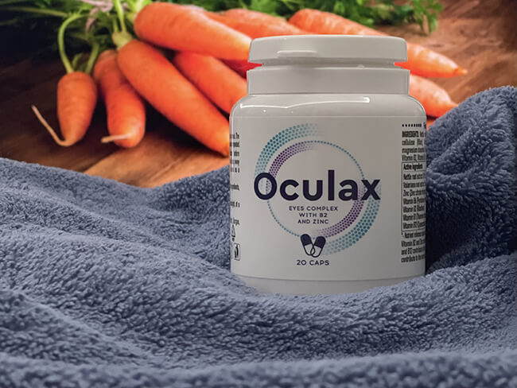
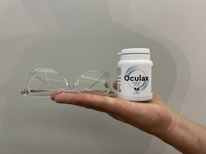
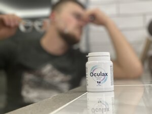

Am 38 de ani și am purtat ochelari toată viața. Înainte de facultate, aveam -2.00 la ambii ochi.
De când am pus ochelarii pe nas prima dată, i-am purtat aproape tot timpul. Mai târziu, am început să
port
lentile de contact.
M-am angajat pe un post de contabilă și vederea mea s-a înrăutățit. A ajuns la -3.00. Uneori,
purtam ochelari, iar alteori, lentilele de contact. Era un cerc vicios. Ochelarii îmi provocau dureri la
nivelul nasului, iar focalizarea pe anumite obiecte îmi provoca amețeală. Lentilele de contact îmi făceau
ochii să lăcrimeze și, în plus, am făcut conjunctivită. Eram atât de sătulă de toate acestea,
încât am decis să mă operez.
Operație: da sau nu?
Mă gândeam să mă operez, dar amânam mereu, pentru că îmi era prea teamă. Teama mă paraliza și nu știam ce
să fac. Prietenii și colegii îmi tot spuneau că este o idee proastă. Aparent, există o metodă de a-ți
recupera vederea, fără să recurgi la operație. Dar, din anumite motive, nu voiam să ascult. Nu
credeam că este posibil. Unii oameni spuneau că este posibil să-ți îmbunătățești semnificativ vederea în
12-17 zile. Nu i-am ascultat.
O metodă nechirurgicală de a-ți recupera vederea
Într-o zi, îmi beam ceaiul în pauza de prânz. I-am auzit pe colegii mei discutând despre cum au
reușit
să-și recupereze vederea fără să se opereze. Am realizat că eram atât de obsedată de operația pe
care urma să o fac, încât nu observasem că niciunul dintre ei nu mai purta ochelari.
Iată cum au reușit. Cu aproximativ o lună în urmă, au căutat pe internet și au descoperit Aceste capsule erau recomandate de foarte mulți bloggeri. După ce
au
citit
recenziile, au comandat capsulele. Produsul a sosit foarte rapid Si am platit la livrare.
Rezultatele au fost incredibile: Bianca și-a îmbunătățit vederea de la -2.50 la 1.00, Alina a ajuns de la
+1.50 la 1.00, iar Cristina a ajuns de la -4.00 la -1.00. Și au obținut aceste rezultate In urma finisarii
tratamentului datorită capsulelor.
M-am gândit că nu am nimic de pierdut, așa că am decis să le încerc și eu. Am plasat o comandă
și, la scurt timp, capsulele am primit-o prin curier.
Arată ca niște capsule obișnuite. Utilizarea capsulelor este foarte simplă. Tot ce trebuie să faci este
să iei aceste capsule tot a doua zi, cu un pahar cu apă. Nu îți ia mult timp. Îți oferă o senzație
plăcută, de calm. Capsulele sunt însoțite de instrucțiuni pas cu pas, care îți explică ce trebuie să faci
pentru a-ți
recupera vederea
Rezultatele
Am început să iau capsulele zilnic. Totul era foarte simplu și nu îmi lua mai mult de 15 minute pe
zi. Le-am luat zilnic aproximativ 2 săptămâni...
Apoi m-am dus la un control și am fost total șocată...
Vederea mea s-a îmbunătățit de la -3.00 la -1.00! După încă o săptămână, aveam dioptrie de 0.7!
Am fost atât de fericită. Am ajuns de la o dioptrie de -3.00 la 0.7 în doar trei săptămâni! Vă vine să
credeți?
ÎN DOAR 3 SĂPTĂMÂNI! Încă sunt șocată că pot să văd totul clar acum, fără să fie în ceață sau
distorsionat.

Între timp, sistemul de sănătate ne jefuiește în continuare, făcându-ne să plătim pentru operație,
ochelari și lentile de contact... Sincer, de ce nu mi-a recomandat oftalmologul să iau aceste capsule?
Explicația este simplă: se teme că-și va pierde pacienții.
Este singura companie autorizată oficial să vândă . Prețul său
este egal
cu
prețul a 3
pachete de lentile de contact sau 4 bilete la film. Tu decizi dacă este mult sau puțin, având în vedere
cât de inutile sunt lentilele de contact și ochelarii.
Sper că povestea mea vă va ajuta și că veți reuși să vă recuperați vederea prețioasă. Dacă ați folosit
deja această metodă, spuneți-mi părerea voastră în comentariile de mai jos.
Atenție! În cadrul programului experimental Văzul, puteți obține
la un preț
redus pe întreg teritoriul României. Orice persoană cu deficiențe de vedere poate comanda atât timp cât
este disponibil până la 31.05.2022
(inclusiv)!
Comentarii
Andreea Popescu Fiica mea ia aceste capsule cu regularitate.
Este foarte mulțumită de ele. Lentilele de contact sunt de domeniul trecutului acum...
Anuța Sorescu Sora mea locuiește în SUA și spune că aceste
capsule sunt FOARTE populare acolo. Au generat atâta rumoare, oamenii pur și simplu le adoră!
Lavinia Soare Iau capsulele de o săptămână și am observat
deja
primele rezultate. Vederea mea s-a îmbunătățit semnificativ! Nu mai am nevoie de ochelari.
Petre Mihăilescu Felicitări! Am folosit această metodă și
vederea mea s-a îmbunătățit de la -5.00 la -2.00 în 28 de zile. Îmi doresc să mi-o recuperez total
:) Uneori, uit să iau capsulele, de asta durează atât de mult. Mă voi ambiționa și voi termina ce
am
început.
Angela Ionescu Și eu iau capsulele. Le-am cumpărat cu mult
timp
în urmă din Germania. Sunt minunate și m-au ajutat foarte mult! Am ajuns de la -4.50 la 1.00 în
doar
patru săptămâni. Apropo, uneori uit să le iau. Dacă le-aș fi luat zilnic, rezultatele ar fi fost
și
mai bune!
Elena Iacobescu Și eu folosesc această metodă. Trebuie să
menționez că funcționează. Am comandat capsulele de pe acest website, fără plată în avans, au
sosit
în 6 zile. Vederea mea era de +1.50 și acum este de 0.80.
Bianca Rădulescu Mi-am recuperat complet vederea! Nu-mi vine
să
cred!!! Am verificat aseară și este PERFECTĂ! Și soțul meu a început să utilizeze capsulele.
Vederea
lui nu este chiar atât de slabă cum era a mea.
Andra Predescu Sper ca toți să obțineți aceleași rezultate
grozave ca mine. Vederea mea a ajuns de la -2.00 la 0.80 în 12 zile. Le sunt recunoscătoare celor
care au creat această metodă minunată. Baftă tuturor!

Rita Iordache Bună! Capsulele sunt grozave. Acționează rapid
și
ușor, mulțumesc din suflet pentru sugestie :) Am fost la medic ieri și a fost șocat. A crezut că
m-am operat la o clinică privată :)
Camelia Manea Mi-am recuperat complet vederea! Nu-mi vine să
cred!!! Am verificat aseară și este PERFECTĂ! Și soțul meu a început să utilizeze capsulele.
Vederea
lui nu este chiar atât de slabă cum era a mea.
Raul Iliescu Bună! Port ochelari de când eram mic. Nu am
crezut
niciodată că mi-aș putea recupera vederea, dar acum o lună, am descoperit acest blog. Am urmat
recomandările și am comandat capsulele. VEDEREA mea s-a RECUPERAT complet!!! Mulțumesc!

Otilia Roman Nu e o noutate. Toată lumea știe despre aceste
capsule. Și cei care nu știu probabil nu vor să renunțe la lentilele de contact sau la ochelari.
Le-am descoperit anul trecut. Le-am spus tuturor prietenilor mei despre ele. Le-am folosit cu
aproximativ șase luni în urmă și vederea mea este foarte bună de atunci.
Irina Cocu Ce norocoasă mă simt că am descoperit această
postare! Capsulele sunt exact ceea ce îmi trebuie! Voi declara război ochelarilor și lentilelor de
contact! Și voi câștiga! Sunt atât de multe recenzii pozitive, încât voi încerca imediat. Vă voi
ține la curent cu rezultatele.
Consumatorul are dreptul sa notifice in scris comerciantului ca renunta la cumparare, fara penalitati si fara
invocarea unui motiv, in termen de 10 zile lucratoare de la primirea produsului sau, in cazul prestarilor de
servicii, de la incheierea contractului.
*Nu este un medicament. *Efectele depind de caracteristicile individuale ale organismului. *Înainte de utilizare,
citiți cu atenţie instrucțiunile.

 Anuța Sorescu Sora mea locuiește în SUA și spune că aceste capsule sunt FOARTE populare acolo. Au generat atâta rumoare, oamenii pur și simplu le adoră!Îmi place ● Lasă un comentariu ● 2 ● 11 minute în urmă
Anuța Sorescu Sora mea locuiește în SUA și spune că aceste capsule sunt FOARTE populare acolo. Au generat atâta rumoare, oamenii pur și simplu le adoră!Îmi place ● Lasă un comentariu ● 2 ● 11 minute în urmă Irina Cocu Ce norocoasă mă simt că am descoperit această postare! Capsulele sunt exact ceea ce îmi trebuie! Voi declara război ochelarilor și lentilelor de contact! Și voi câștiga! Sunt atât de multe recenzii pozitive, încât voi încerca imediat. Vă voi ține la curent cu rezultatele.Îmi place ● Lasă un comentariu ● 16 ● 2 ore în urmă
Irina Cocu Ce norocoasă mă simt că am descoperit această postare! Capsulele sunt exact ceea ce îmi trebuie! Voi declara război ochelarilor și lentilelor de contact! Și voi câștiga! Sunt atât de multe recenzii pozitive, încât voi încerca imediat. Vă voi ține la curent cu rezultatele.Îmi place ● Lasă un comentariu ● 16 ● 2 ore în urmă Beatrice Timofte Această metodă a fost utilizată deja în alte țări. Cu succes. Mereu suntem ultimii care află...Îmi place ● Lasă un comentariu ● 21 ● 2 ore în urmă
Beatrice Timofte Această metodă a fost utilizată deja în alte țări. Cu succes. Mereu suntem ultimii care află...Îmi place ● Lasă un comentariu ● 21 ● 2 ore în urmă